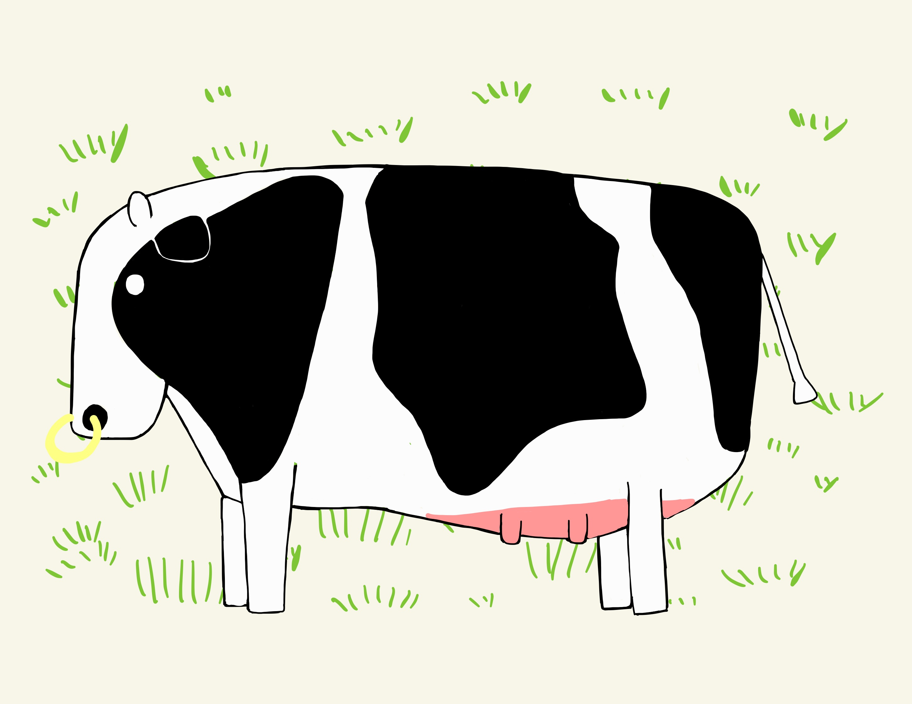

Hello! I am Takeshi Kawahara.
はじめまして．1994年生まれの河原 健志（カワハラ タケシ）と申します． 現在は東京大学経済学研究科の博士課程に在籍している特別研究員 DC1 の学生です． 普段はゲーム理論という分野を研究しています．
気持ちのいい生活を助けるようなプロダクトを自分の手で具現化できるようになりたいと思い， エンジニアを志望しています． まだ開発の経験は浅いですが，新しい知識を吸収しつつ楽しく開発しています．
こちらのポートフォリオサイトです． フロントエンドフレームワークのBootstrapを使用しています． 一応，レスポンシブデザインに対応しています．
ヘッダーの牛の画像は今年の年賀状用にiPadで描いてみたものです． 来年は違う干支に更新する予定です．